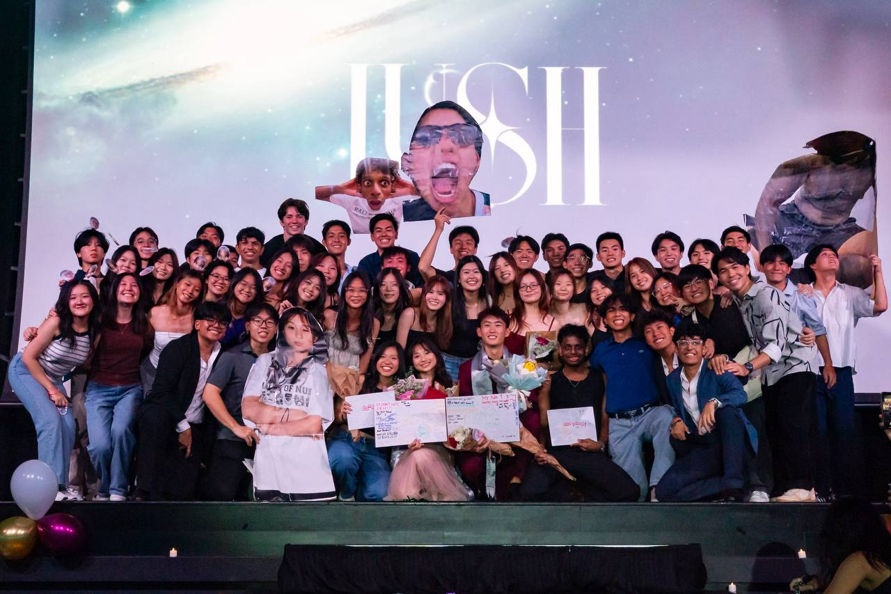
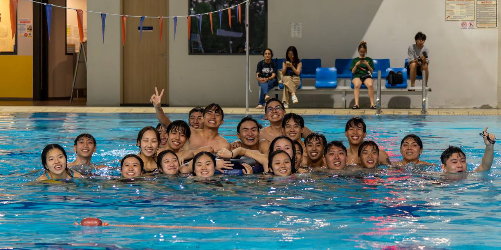
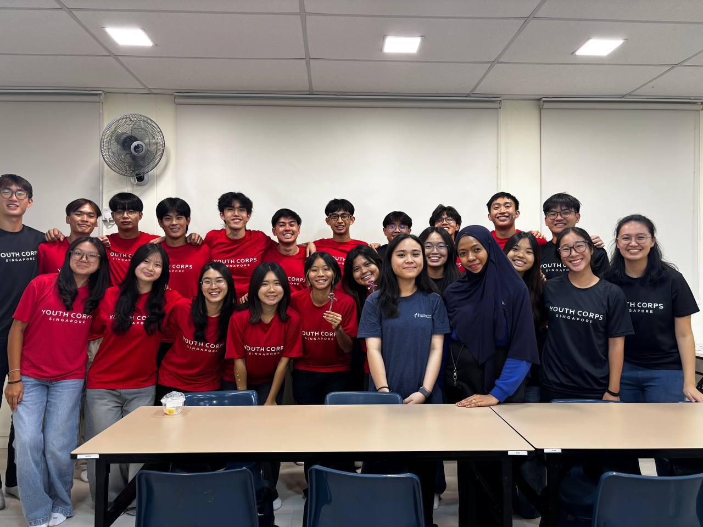
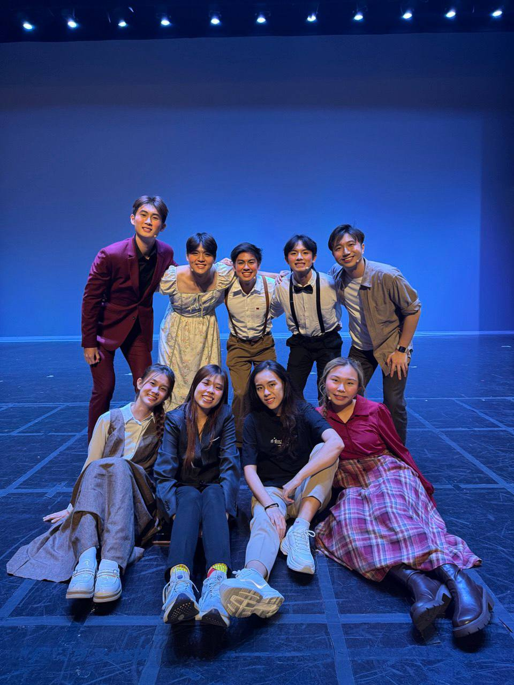
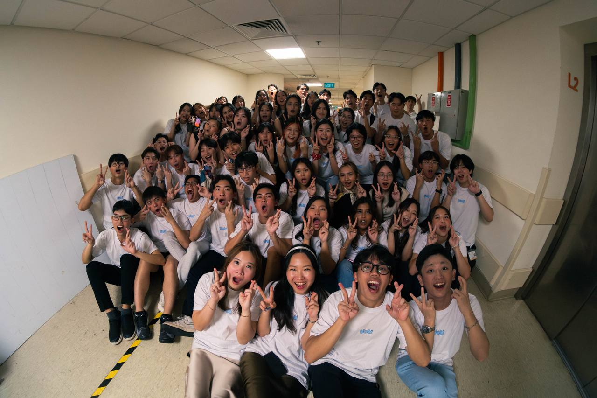
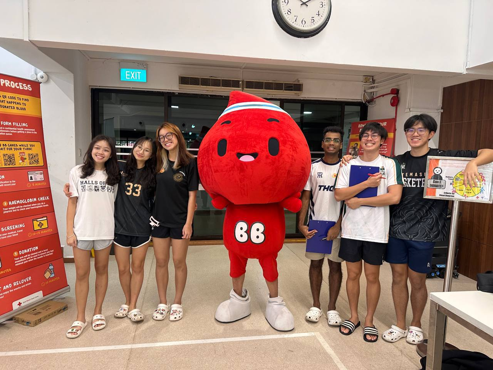
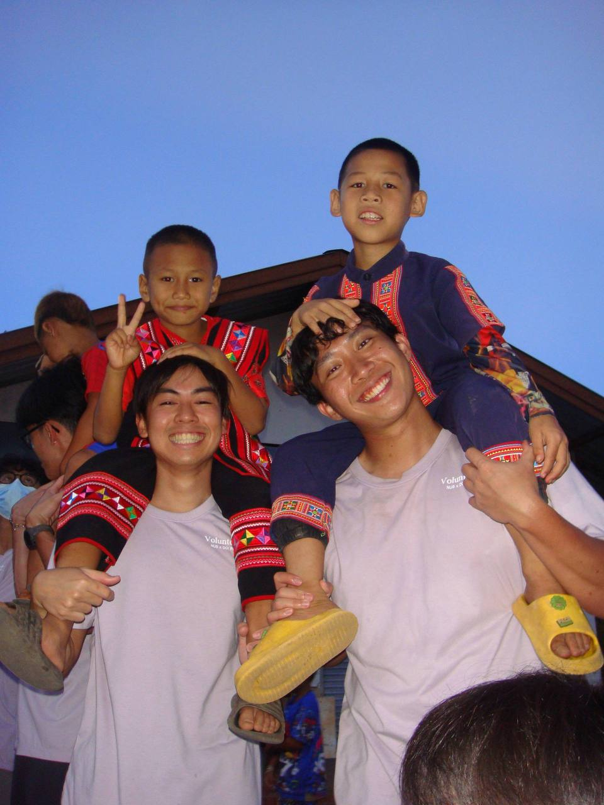
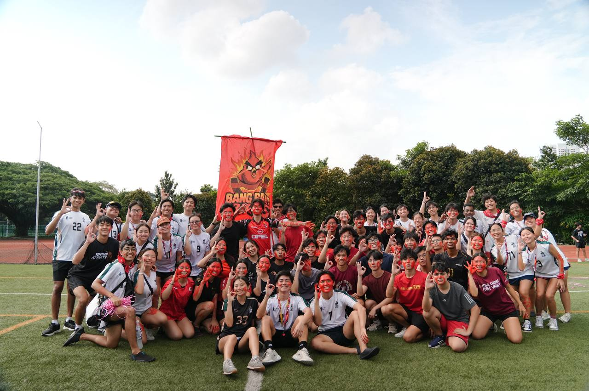

I am currently residing in Temasek Hall in NUS, where I serve as the Blockhead of my block as well as the Vice-Head of Temasek Green, which is our hall's environmental club. Hall has allowed me to step out of my comfort zone, try out so many new things and communicate better with people from all walks of life.
A few memories
1 / 9

B Block, AY 25/26
This is B block in AY 25/26, where I met so many new people, especially my group of closest friends whom I always look forward to talking to every day! I enjoy spending time with the people around me who come from all walks of life and really inspire me to become a better version of myself each day.

IHG Swimming
I joined my hall's Swimming team where we clinched the gold medal for the annual IHG played amongst the other halls in NUS. I swam the 50m breaststroke event where I got 1st place!

Beyond Borders: Morning Star
I joined Temasek Hall Beyond Borders where we planned Local Community Involvement Projects. This was us at Morning Star Childcare Centre where we volunteered under Youth Corps Singapore.

Theatrette & Dance Production
This is part of my side quests in hall where I joined Theatrette! I acted in a play that was combined with dance performances in Temasek Hall's biggest production, Dance Production. I never acted before and I really thought that this was interesting because I stepped out of my comfort zone and acted with my friends in front of my friends and family! I played the role of the funny detective and it was honestly the best experience I ever had so far in hall!

Temasek VOX
I also joined Temasek VOX, which is our hall's choir and acapella group. We performed Christmas carols during the month of December at places like CHIJMES, Winter Wonderland @ Gardens by the Bay and RWS Hotel Ora! This was us at our final performance of the year, LegaTHo where we performed for our friends and family!

My first blood donation
This was my first time donating blood ever! With the support of my friends, we donated blood together and it was not as scary as I thought it would be.

Beyond Borders: Chiang Mai
This was during our Overseas Community Involvement Project as part of Temasek Hall Beyond Borders, where we went for a 14 day exchange at Chiang Mai. In collaboration with Chiang Mai University, we built a drainage system for the villagers at Doi Pumuen, as well as tutored and conducted simple Thai and English classes for the village children! As part of the SFI program, we also learnt basic Thai and did our project on tea tourism there!

Leading B Block, AY 26/27
This was B block 26/27 where it was my first time stepping on the big stage and leading as the block head during our annual orientation camp! Honestly, I found it difficult to communicate my ideas well at the start but after experiencing it firsthand, I felt so much better and had the confidence to lead.